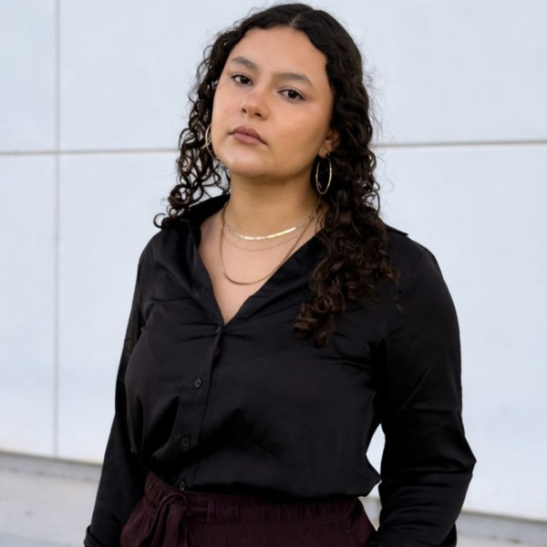

Laguna Hawks
Designed a public web experience for a student gravity-racing team, connecting engineering storytelling, team identity and sponsorship information.
Creative Technology & UI/UX
Torreón, Coahuila, México
mirandavilla341@gmail.com · abrilvilla.dev
LinkedIn · GitHub · Devpost · Instagram

Creative technologist and Software Development Engineering student combining visual storytelling with working digital interfaces. I explore editorial layouts, interactive web experiences and motion, connecting the visual idea with the logic that makes it usable.
Designed a public web experience for a student gravity-racing team, connecting engineering storytelling, team identity and sponsorship information.
Created a warm editorial interface for a student initiative: digital newspaper pages, stories, events, generations and an editable publishing workflow. Development version.
Bilingual educational web experience with lessons, activities, progress, reward logic and distinct supervised child and adult spaces.
Built a work-integrated learning interface with career pathways, evidence collection, interactive practice and a separate content-control workspace. React, TypeScript, Supabase and Cloudflare.
Developed a web writing product with authentication, payment flows, PostgreSQL, transactional email and Cloudflare Workers. Implemented local JavaScript text-editing rules to reduce dependence on external model APIs.
Software Development Engineering · 2025 - present
Third semester · GPA 98.33/100 · 35% academic scholarship